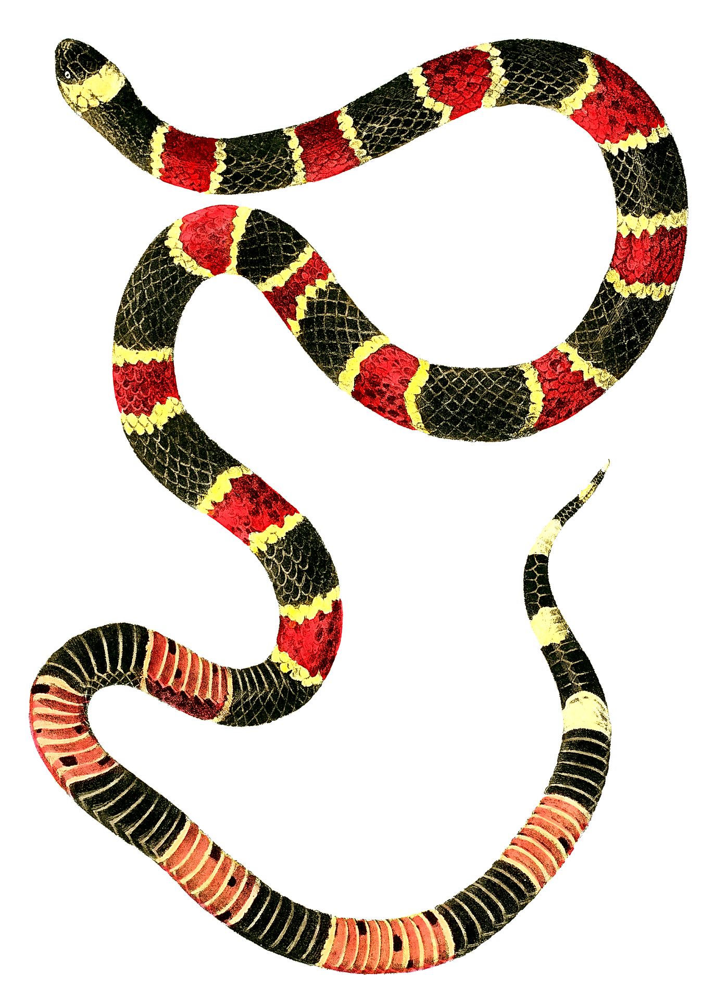

CORALILLO
Nombre
Nombre cientifico

La serpiente de coral vive en regiones tropicales de América, incluyendo selvas, bosques y zonas húmedas. Suele esconderse bajo hojas, troncos o en la tierra, por lo que no es fácil verla. Es un animal solitario y de hábitos principalmente nocturnos o crepusculares. Se alimenta de pequeños reptiles, anfibios y otras serpientes. Aunque es venenosa, generalmente evita el contacto con humanos y solo ataca si se siente amenazada.
Caracteristicas: